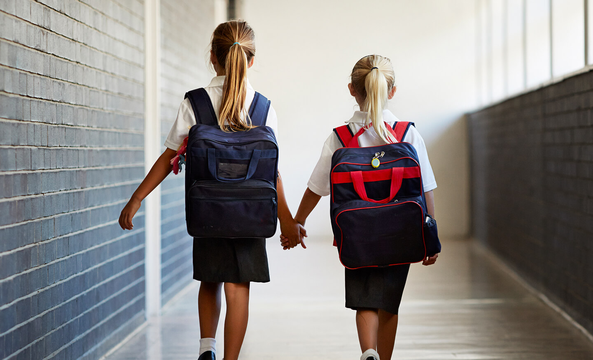
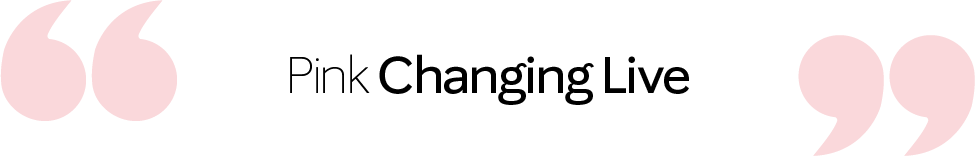

Pink Changing Lives
我們對女性的承諾
Girl Power 時代來臨！
樂施精神是我們的核心精神，促使我們能豐富世界各地的婦女及其家庭的使命， 透過這一致的理念，我們在全球將近40個市場中，積極回饋當地的社會，改變全球女性逆轉美麗人生及兒童生命。

全球慈善活動的回饋社會項目
- 幫助世界各地的婦女和兒童
- 建立圖書館幫助有需要的兒童
- 資助貧困女孩的教育
- 提供拯救生命的醫療服務
- 支持反販運組織
- 幫助殘疾兒童
- 教授對乳癌的認識
- 幫助結束家庭暴力

Mary Kay Ash 女士以擁有寬大胸懷及創新的商業領袖見稱
她以「妳希望別人怎樣待妳，妳也要怎樣待別人」的信念和回饋別人來創立Mary Kay
透過這一致的理念，Mary Kay改變全球女性及兒童的生命
2019年11月19日
玫琳凱在國際婦女論壇上倡導全球女性賦權、創業精神和平等，在世界各地的女性中，我們致力於與世界領導人合作，幫助女性獨立、經濟安全和更平等的工作機會。
2018年1月30日
玫琳凱與喬治亞州反對家庭暴力聯盟和性侵犯團體，督促立法者加強家庭暴力法保護受害者。
2017年5月3日
玫琳凱前進加州國會大廈！與加州終止家庭暴力聯盟攜手合作，共同對抗家庭暴力，爭取立法資金。
2016年11月17日
玫琳凱公司和loveisrespect、Everfi合作推出了健康基金會計劃。推出首創的數字課程，使學生能夠建立積極關係、學習如何溝通以及如何解決衝突。